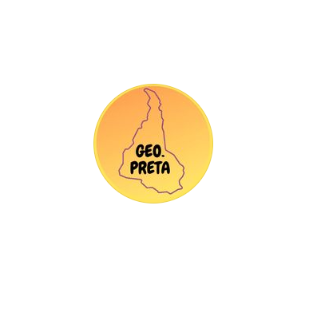
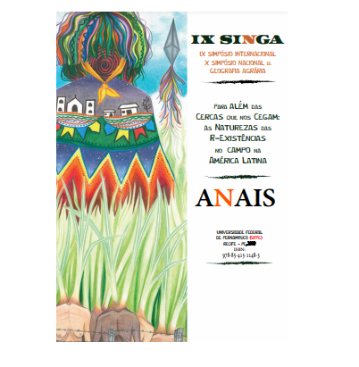
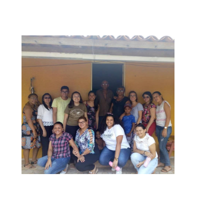
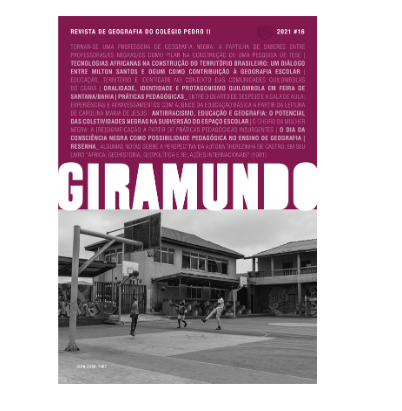

Projetos / Trabalhos
-
Geo Preta
O Geo.preta foi um projeto idealizado e construído durante o período pandêmico por geógrafos pretos que tem como objetivo um espaço aberto para o debate acerca de políticas públicas, violação dos direitos humanos e o racismo ambiental através de um olhar geográfico. O Geo.preta faz publicações pertinentes relacionando a geografia e as questões étnico raciais, promove eventos em que se tem debates pertinentes para construir a Geografia uma ciência cada vez mais engajada.
Saiba +  -
A inserção da Educação Quilombola no contexto da Educação do Campo no Ceará
Apresentado no Simpósio Internacional de Geografia Agrária, surgiu a partir das atividades do projeto de extensão que tratava sobre a Formação dos Professores do e no campo no Ceará. Esse trabalho apresentou experiências vivenciadas no contexto da educação escolar quilombola no semestre de 2018.2 em uma comunidade no município de Tamboril-CE, no trabalhado apresentamos o contexto da educação escolar quilombola e como essa parcela da educação é tratada em segundo plano e a passos lentos. O trabalho ainda discute sobre a construção de um currículo para a educação escolar quilombola pautado na lei 10.639, apresenta as práticas pedagógicas desenvolvidas na escola da comunidade quilombola Encantados do Bom Jardim- Tamboril/CE. Esse trabalho é muito importante pois surge de um projeto que visa a inserção das comunidades quilombolas dentro do contexto da Educação do Campo no Cerará, fazendo um levantamento do que realmente estrutura-se como educação escolar quilombola e um entendimento da Lei 10.639/03 e quais os impactos dela para a Educação Quilombola.
Saiba +  -
Formação docente e práticas pedagógicas para as escolas do/no campo do Ceará
Um projeto de extensão que visava fornecer instrumentos teóricos e metodológicos que pudessem atender as demandas dos projetos políticos pedagógicos (PPP) das escolas contextualizadas. Visava contribuir com uma formação e participação social e política dos estudantes de Geografia e auxiliar na educação continuada dos professores dessas escolas através do intercâmbio Universidade X Educação básica. Como bolsista desse projeto, fui responsável por organizar as oficinas que era disponibilizadas para os professores e também comunidade escolar das escolas que atuamos, as oficinas tratavam de tecnologias, geotecnologias, educação, currículo, questões sociais e outros temas diversos.
Saiba +  -
Educação, Território e Identidade no contexto das Comunidades Quilombolas do Ceará
Publicado em conjunto com uma colega, Natália Lidia na revista Giramundo do colégio Pedro II, fala sobre educação para as comunidades quilombolas e como falar sobre isso é falar sobre a luta por seus territórios. O Trabalho visa traçar uma relação entre Identidade, Território e Educação na realidade das comunidades quilombolas.
Saiba + 